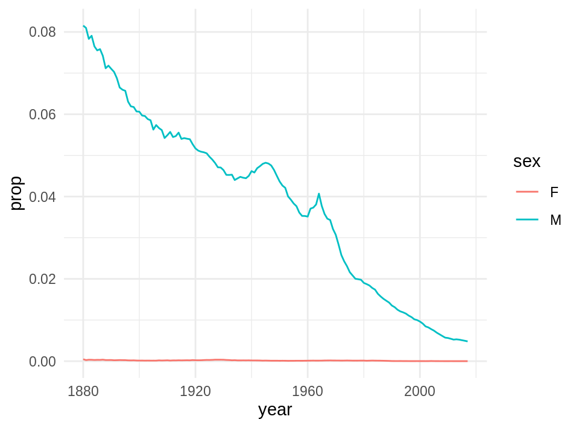

2.2 Visualización con ggplot2
Utilizaremos el paquete ggplot2, fue desarrollado por Hadley Wickham y es
una implementación de la gramática de las gráficas (Wilkinson et al. 2005). Si no lo
tienes instalado comienza instalando el paquete ggplot2 o el tidyverse que
lo incluye.
Gráficas de dispersión
Usaremos el conjunto de datos election_sub_2012 que se incluye en el paquete
estcomp, puedes encontrar información de esta base de datos tecleando
?election_sub_2012.
library(estcomp)
data(election_sub_2012)
?election_sub_2012
glimpse(election_sub_2012)
#> Observations: 1,500
#> Variables: 23
#> $ state_code <chr> "19", "30", "09", "07", "09", "27", "20", "15", …
#> $ state_name <chr> "Nuevo León", "Veracruz", "Ciudad de México", "C…
#> $ state_abbr <chr> "NL", "VER", "CDMX", "CHPS", "CDMX", "TAB", "OAX…
#> $ district_loc_17 <int> 20, 30, 27, 5, 26, 21, 15, 43, 4, 19, 17, 9, 9, …
#> $ district_fed_17 <int> 7, 11, 22, 5, 15, 6, 3, 7, 4, 5, 6, 4, 1, 1, 3, …
#> $ polling_id <int> 90532, 134417, 32160, 15456, 31925, 122541, 9451…
#> $ section <int> 347, 1775, 2705, 1121, 4358, 502, 37, 826, 2207,…
#> $ region <chr> "noreste", "este", "centrosur", "suroeste", "cen…
#> $ polling_type <chr> "B-C", "B-C", "B-C", "B-C", "B-C", "B-C", "B-C",…
#> $ section_type <chr> "U", "U", "U", "U", "U", "U", "M", NA, "U", "M",…
#> $ pri_pvem <int> 150, 146, 103, 135, 108, 102, 121, 157, 134, 187…
#> $ pan <int> 111, 52, 43, 33, 95, 27, 60, 94, 40, 128, 53, 56…
#> $ panal <int> 12, 4, 10, 10, 4, 4, 8, 16, 4, 10, 0, 12, 8, 1, …
#> $ prd_pt_mc <int> 78, 226, 240, 237, 181, 290, 141, 158, 90, 63, 6…
#> $ otros <int> 1, 4, 4, 7, 6, 14, 1, 8, 8, 11, 2, 14, 7, 12, 48…
#> $ total <int> 352, 432, 400, 422, 394, 437, 331, 433, 276, 399…
#> $ nominal_list <int> 675, 636, 688, 672, 522, 698, 596, 716, 506, 584…
#> $ pri_pvem_pct <dbl> 43, 34, 26, 32, 27, 23, 37, 36, 49, 47, 42, 42, …
#> $ pan_pct <dbl> 32, 12, 11, 8, 24, 6, 18, 22, 14, 32, 50, 12, 16…
#> $ panal_pct <dbl> 3, 1, 2, 2, 1, 1, 2, 4, 1, 3, 0, 3, 3, 0, 28, 0,…
#> $ prd_pt_mc_pct <dbl> 22, 52, 60, 56, 46, 66, 43, 36, 33, 16, 6, 40, 5…
#> $ otros_pct <dbl> 0, 1, 1, 2, 2, 3, 0, 2, 3, 3, 2, 3, 2, 3, 13, 8,…
#> $ winner <chr> "pri_pvem", "prd_pt_mc", "prd_pt_mc", "prd_pt_mc…Comencemos con nuestra primera gráfica:

En ggplot2 se inicia una gráfica con la instrucción ggplot(), debemos
especificar explicitamente que base de datos usamos, este es el primer argumento
en la función ggplot(). Una vez que creamos la base añadimos
capas, y dentro de aes() escribimos las variables que queremos
graficar y el atributo de la gráfica al que queremos mapearlas.
La función geom_point() añade una capa de puntos, hay muchas funciones
geometrías incluídas en ggplot2: geom_line(), geom_boxplot(),
geom_histogram,… Cada una acepta distintos argumentos para mapear las
variables en los datos a características estéticas de la gráfica. En el ejemplo
de arriba mapeamos displ al eje x, prd_pt_mc al eje y, pero geom_point() nos
permite representar más variables usando la forma, color y/o tamaño del punto.
Esta flexibilidad nos permite entender o descubrir patrones más interesantes en
los datos.

 Experimenta con los aesthetics color (color),
tamaño (size) y forma (shape).
Experimenta con los aesthetics color (color),
tamaño (size) y forma (shape).
¿Qué diferencia hay entre las variables categóricas y las continuas?
¿Qué ocurre cuando combinas varios aesthetics?
El mapeo de las propiedades estéticas se denomina escalamiento y depende del tipo de variable, las variables discretas (por ejemplo, tipo de casilla, región, estado) se mapean a distintas escalas que las variables continuas (variables numéricas como voto por un partido, lista nominal, etc.), los defaults de escalamiento para algunos atributos son (los escalamientos se pueden modificar):
| aes | Discreta | Continua |
|---|---|---|
Color (color) |
Arcoiris de colores | Gradiente de colores |
Tamaño (size) |
Escala discreta de tamaños | Mapeo lineal entre el área y el valor |
Forma (shape) |
Distintas formas | No aplica |
Transparencia (alpha) |
No aplica | Mapeo lineal a la transparencia |
Los geoms controlan el tipo de gráfica

¿Qué problema tiene la siguiente gráfica?


¿Cómo podemos mejorar la siguiente gráfica?

Intentemos reodenar los niveles de la variable clase
ggplot(election_sub_2012, aes(x = reorder(state_abbr, prd_pt_mc),
y = prd_pt_mc)) +
geom_point(size = 0.8)
Podemos probar otros geoms.
ggplot(election_sub_2012, aes(x = reorder(state_abbr, prd_pt_mc),
y = prd_pt_mc)) +
geom_jitter(size = 0.8)

También podemos usar más de un geom!
ggplot(election_sub_2012, aes(x = reorder(state_abbr, prd_pt_mc),
y = prd_pt_mc)) +
geom_jitter(size = 0.8) +
geom_boxplot()
Y mejorar presentación:
ggplot(election_sub_2012, aes(x = reorder(state_abbr, prd_pt_mc),
y = prd_pt_mc)) +
geom_jitter(alpha = 0.6, size = 0.8) +
geom_boxplot(outlier.color = NA) +
theme(axis.text.x = element_text(angle = 45, hjust = 1)) +
labs(title = "Votos por casilla y estado",
subtitle = "PRD-PT-MC", x = "estado", y = "total de votos")
Lee la ayuda de reorder y repite las gráficas
anteriores ordenando por la mediana de prd_pt_mc.
- ¿Cómo harías para graficar los puntos encima de las cajas de boxplot?
Paneles
Ahora veremos como hacer páneles de gráficas, la idea es hacer varios múltiplos de una gráfica donde cada múltiplo representa un subconjunto de los datos, es una práctica muy útil para explorar relaciones condicionales.
En ggplot podemos usar facet_wrap() para hacer paneles dividiendo los datos de acuerdo a las categorías de una sola variable
ggplot(election_sub_2012, aes(x = reorder(state_abbr, pri_pvem_pct, median),
y = pri_pvem_pct)) +
geom_boxplot() +
facet_wrap(~ section_type) +
theme(axis.text.x = element_text(angle = 45, hjust = 1))
Podemos eliminar los NA. Veremos la función filter() en la próxima sesión.
ggplot(filter(election_sub_2012, !is.na(section_type)),
aes(x = reorder(state_abbr, pri_pvem_pct, median), y = pri_pvem_pct)) +
geom_boxplot() +
facet_wrap(~ section_type) +
theme(axis.text.x = element_text(angle = 45, hjust = 1))
También podemos hacer una cuadrícula de \(2\) dimensiones usando
facet\_grid(filas~columnas)
# Veremos como manipular datos en las próximas clases
election_region_2012 <- election_2012 %>%
group_by(region, section_type) %>%
summarise_at(vars(pri_pvem:total), sum) %>%
mutate_at(vars(pri_pvem:otros), .funs = ~ 100 * ./total) %>%
ungroup() %>%
mutate(region = reorder(region, pri_pvem)) %>%
gather(party, prop_votes, pri_pvem:otros) %>%
filter(!is.na(section_type))
ggplot(election_region_2012, aes(x = reorder(party, prop_votes),
y = prop_votes, fill = reorder(party, -prop_votes))) +
geom_col(show.legend = FALSE) +
facet_grid(region ~ section_type) +
theme(axis.text.x = element_text(angle = 45, hjust = 1)) 
Los páneles pueden ser muy útiles para entender relaciones en nuestros datos. En la siguiente gráfica es difícil entender si existe una relación entre radiación solar y ozono.
data(airquality)
ggplot(airquality, aes(x = Solar.R, y = Ozone)) +
geom_point()
#> Warning: Removed 42 rows containing missing values (geom_point).
Veamos que ocurre si realizamos páneles separando por velocidad del viento.
library(Hmisc)
airquality$Wind.cat <- cut2(airquality$Wind, g = 3)
ggplot(airquality, aes(x = Solar.R, y = Ozone)) +
geom_point() +
facet_wrap(~ Wind.cat)
Podemos agregar un suavizador (loess) para ver mejor la relación de las variables en cada panel.
ggplot(airquality, aes(x = Solar.R, y = Ozone)) +
geom_point() +
facet_wrap(~ Wind.cat) +
geom_smooth(method = "lm")
Como vimos en el caso de los resultados electorales por región, en ocasiones es necesario realizar transformaciones u obtener subconjuntos de los datos para poder responder preguntas de nuestro interés.
library(dplyr)
library(babynames)
glimpse(babynames)
#> Observations: 1,924,665
#> Variables: 5
#> $ year <dbl> 1880, 1880, 1880, 1880, 1880, 1880, 1880, 1880, 1880, 1880,…
#> $ sex <chr> "F", "F", "F", "F", "F", "F", "F", "F", "F", "F", "F", "F",…
#> $ name <chr> "Mary", "Anna", "Emma", "Elizabeth", "Minnie", "Margaret", …
#> $ n <int> 7065, 2604, 2003, 1939, 1746, 1578, 1472, 1414, 1320, 1288,…
#> $ prop <dbl> 0.07238359, 0.02667896, 0.02052149, 0.01986579, 0.01788843,…Supongamos que queremos ver la tendencia del nombre “John”, para ello debemos generar un subconjunto de la base de datos. ¿Qué ocurre en la siguiente gráfica?
babynames_John <- filter(babynames, name == "Teresa")
ggplot(babynames_John, aes(x = year, y = prop)) +
geom_line()

La preparación de los datos es un aspecto muy importante del análisis y suele ser la fase que lleva más tiempo. Es por ello que el siguiente tema se enfocará en herramientas para hacer transformaciones de manera eficiente.
Recursos
- El libro R for Data Science (Wickham and Grolemund 2017) tiene un capítulo de visualización.
- Documentación con ejemplos en la página de ggplot2.
- Otro recurso muy útil es el
acordeón de ggplot.
- La teoría detrás de ggplot2 se explica en el libro de ggplot2 (Wickham 2009),
- Google, stackoverflow y RStudio Community tienen un tag para preguntas relacionadas con ggplot2.
Referencias
Wickham, Hadley. 2009. Ggplot2: Elegant Graphics for Data Analysis. 2nd ed. Springer Publishing Company, Incorporated.
Wickham, Hadley, and Garrett Grolemund. 2017. R for Data Science: Import, Tidy, Transform, Visualize, and Model Data. 1st ed. O’Reilly Media, Inc.
Wilkinson, L., D. Wills, D. Rope, A. Norton, and R. Dubbs. 2005. The Grammar of Graphics. Statistics and Computing. Springer New York. https://books.google.com.mx/books?id=\_kRX4LoFfGQC.